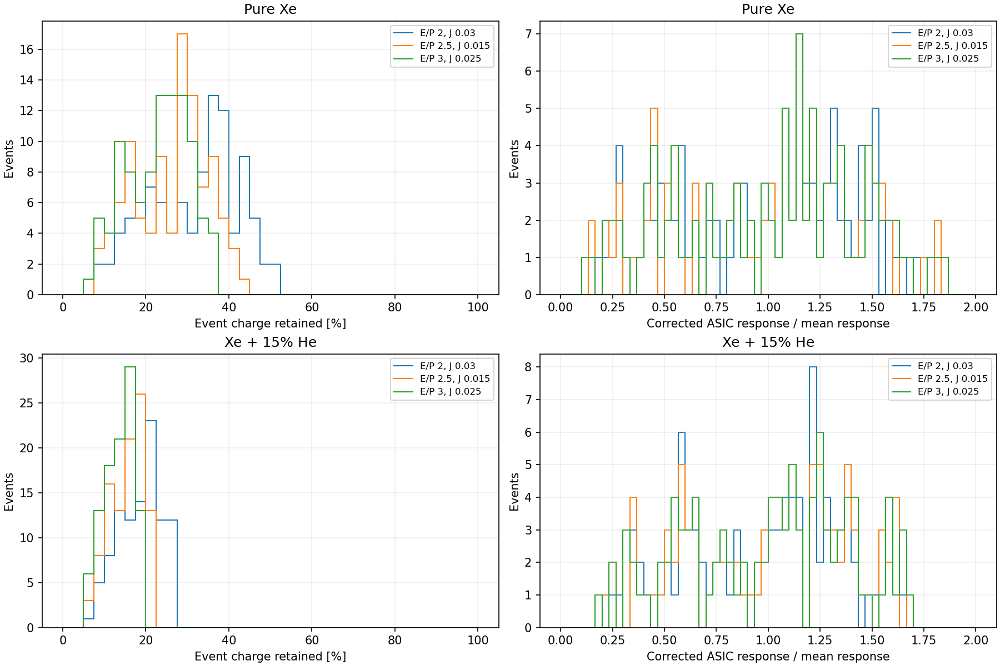

The same 100 bb0nu source events, primary-pair checksums and drift distances are compared in both gases at E/P = 2, 2.5 and 3 kV/cm/bar. The user-specified EL variance ratios are J = 0.030, 0.015 and 0.025, respectively. The statistical SiPM uses 128 subdivisions per 250 ns bucket, PDE 0.3, gain 2.55e+06 and recovery time 73.4 ns. Electronics remain fixed at 0.5 PE RMS noise and a 1 mA upper current limit (611.9 PE per bucket). Full production remains stopped.
| Gas | E/P | J | Events | Charge retained % | Photon cells clipped % | Events with clipping % | Before ASIC RMS % | After ASIC RMS % |
|---|---|---|---|---|---|---|---|---|
| Pure Xe | 2 | 0.03 | 100 | 32.6 | 42.2 | 100 | 13.6 | 42.1 |
| Pure Xe | 2.5 | 0.015 | 100 | 27.3 | 49.1 | 100 | 16.0 | 43.4 |
| Pure Xe | 3 | 0.025 | 100 | 23.9 | 54.8 | 100 | 17.8 | 44.2 |
| Xe + 15% He | 2 | 0.03 | 100 | 19.3 | 54.5 | 100 | 14.2 | 37.6 |
| Xe + 15% He | 2.5 | 0.015 | 100 | 16.1 | 60.1 | 100 | 16.5 | 38.6 |
| Xe + 15% He | 3 | 0.025 | 100 | 14.2 | 65.2 | 100 | 18.1 | 39.3 |
Charge retained is the sum of ASIC output divided by the sum of SiPM input charge over the sample. The clipped-cell percentage uses only SiPM–bucket cells containing incident photons. The event percentage counts events with at least one clipped bucket. These three quantities have distinct denominators.
Event-total response spread is RMS/mean after subtracting the expected stationary dark baseline, correcting known attachment and dividing by deposited energy. SiPM recovery nonlinearity is retained in both columns. The before/after comparison measures the forward response spread under these corrections. All 100 events enter; the quoted widths are full-distribution RMS values. Each plotted ASIC distribution is divided by its own mean.
